Зона ответственности используется для обозначения участника бизнес-процесса. Это может быть определённый сотрудник организации, отдел, покупатель, поставщик или роль, например, инициатор или согласующий. Внутри зоны ответственности располагаются задачи и события, за выполнение которых отвечает данный участник процесса.
Таким образом, добавив на схему все зоны ответственности и разместив в них соответствующие задачи, вы наглядно отобразите взаимодействие между участниками процесса и опишете последовательность действий каждого из них.
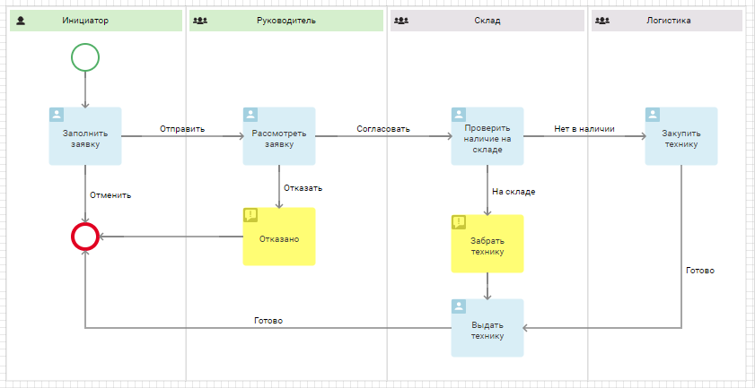
Типы зон ответственности
Чтобы определить участников бизнес-процесса, вы можете использовать один из следующих типов зон ответственности:
- Динамическая — используется в том случае, если должность участника определяется в ходе исполнения процесса. На схеме обозначается зеленым цветом;
- Статическая — выбирайте этот тип, если должность ответственного известна до начала процесса. На схеме обозначается серым цветом.
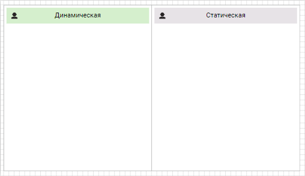
На модели процесса зоны ответственности можно располагать как вертикально, так и горизонтально.
Как создать зону ответственности
Зона ответственности, обозначающая Инициатора процесса, создается автоматически. Добавить другие зоны ответственности можно двумя способами:
- нажать на значок плюс на поле для моделирования процесса;
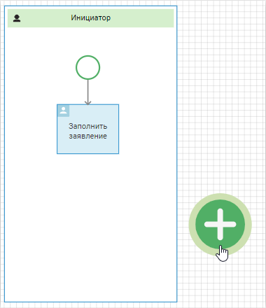
- перетащить блок с панели инструментов справа от поля для моделирования.
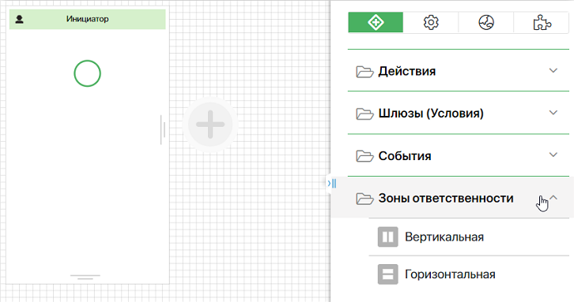
Настройки зон ответственности
Чтобы разобраться с настройкой этого графического элемента, рассмотрим процесс согласования заявки на технику.
Ниже перечислены все шаги процесса и их исполнители:
- любой сотрудник может создать заявку и отправить её на рассмотрение своему руководителю;
- руководитель отклоняет или утверждает заявку;
- в случае положительного решения, сотрудники склада проверяют наличие товара. Если техника есть на складе, её выдают инициатору;
- если нужной техники на складе не оказалось, сотруднику склада придёт задача приобрести запрошенный товар;
- после того как нужная техника будет закуплена, её выдадут заявителю.
Опишем участников при помощи динамических и статических зон ответственности.
Динамическая зона ответственности
Если запускать процесс может любой сотрудник, то на этапе моделирования его имя или должность вам будут неизвестны. Конкретный исполнитель определится в ходе процесса. На схеме он будет представлен динамической зоной ответственности.
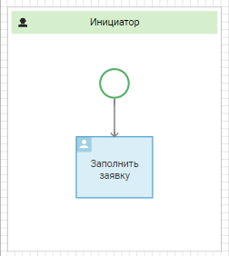
Зона ответственности Инициатор добавляется автоматически, когда вы создаете новый процесс. Чтобы перейти в окно настроек, дважды нажмите на её название.
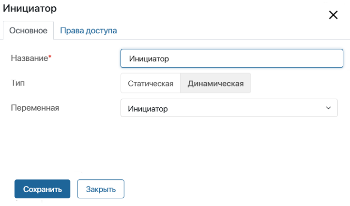
Переменная Инициатор также создается автоматически. Она определяется сразу после старта процесса и хранит данные пользователя, запустившего процесс. Вы сможете использовать эту переменную при моделировании форм задач, в оповещениях и т. д.
Добавим ещё одну зону ответственности, чтобы обозначить руководителя инициатора. В открывшемся окне выберем тип Динамическая зона ответственности и сохраним настройки. Добавится зона ответственности с названием Исполнитель.
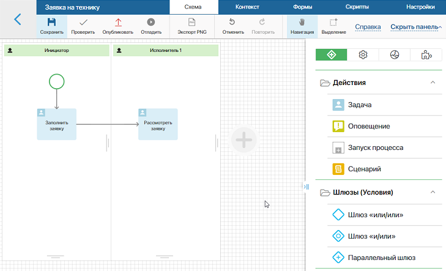
Чтобы сделать схему процесса более наглядной, назовём эту зону ответственности Руководитель. Для этого перейдём в окно настроек, дважды нажав на название зоны ответственности.
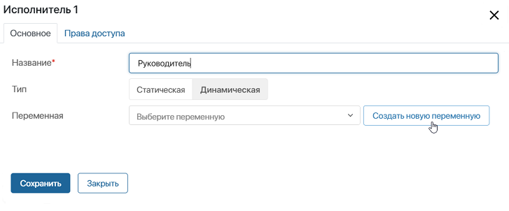
Теперь нужно указать переменную, хранящую исполнителя. Она определяется каждый раз, когда кто-то запускает процесс. Например, инициатор на этапе заполнения заявки будет выбирать своего руководителя из списка всех сотрудников компании.
Нажмём на кнопку Создать новую переменную и в открывшемся окне укажем нужные параметры.
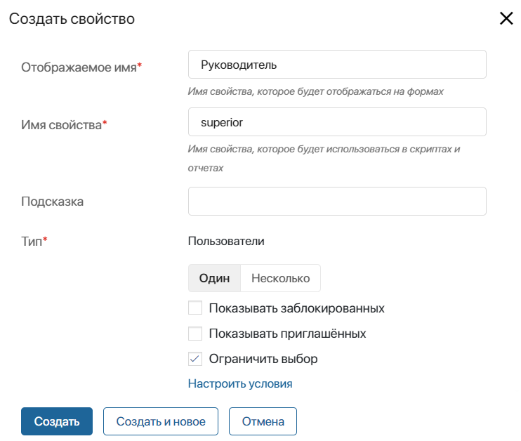
Все обязательные поля в данном случае заполняются автоматически. Обратите внимание, что вы не можете изменить тип, т. к. в зонах ответственности всегда используются переменные типа Пользователи. Однако можно указать дополнительные параметры:
- Один или Несколько — с помощью переключателя укажите, сколько пользователей можно записать в переменную;
- Показывать заблокированных — выберите опцию, если в качестве значения переменной можно указывать заблокированных пользователей;
- Показывать приглашённых — отметьте опцию, если в качестве значения можно выбирать пользователей, которые получили приглашение в компанию, но ещё не авторизовались в системе;
- Ограничить выбор — включите опцию, чтобы ограничить список доступных для выбора пользователей. Например, разрешить выбор сотрудников только из определённой группы. Для настройки ограничения нажмите ссылку Настроить условия. Подробнее читайте в статье «Ограничить выбор пользователей и элементов приложения на форме элемента».
Выберите нужный вариант и нажмите Создать.
После этого окно настроек зоны ответственности Руководитель будет выглядеть так:
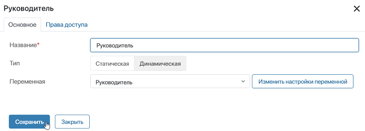
Таким образом, с помощью динамических зон ответственности мы указали двух участников процесса. Перейдём к настройкам статической зоны ответственности.
Статическая зона ответственности
Зоны ответственности этого типа используются, если вы заранее знаете, какую должность занимает участник процесса или в какую пользовательскую группу он входит.
На третьем шаге процесса оформления заявки наличие техники проверяет сотрудник склада. Так как нам известно, кто именно должен выполнять эту задачу, для обозначения этого участника процесса следует выбрать статическую зону ответственности.
Добавим новую зону ответственности и выберем тип Статическая зона ответственности. Перейдём в окно настроек, чтобы переименовать зону ответственности.
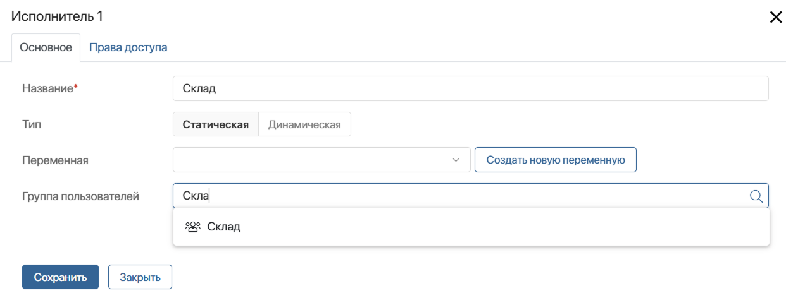
Рассмотрим подробно другие поля в этом окне:
- Переменная — создайте или выберите из контекста процесса переменную типа Пользователи, которая будет хранить информацию о должности и имени участника процесса. Вы сможете использовать эту переменную при моделировании форм задач, в оповещениях и т. д.;
- Группа пользователей — выберите пользовательскую группу или элемент оргструктуры, чтобы определить, кто именно будет выполнять задачи, расположенные в зоне ответственности. Например, укажите группу Склад, чтобы ответственными за задачу были все сотрудники из этой группы.
Варианты использования этих опций в статической зоне ответственности:
- Если указана только группа пользователей, поле Переменная можно оставить пустым.
- Если вы задали переменную, и она заполнена до того, как процесс попадает в зону ответственности, исполнителем задачи будет тот, кто указан в переменной. При этом группа пользователей не учитывается.
- Если вы указали и переменную, и группу пользователей, но переменная не заполнена заранее, то в переменную автоматически запишется значение из поля Группа пользователей.
- Если указана только переменная и она пуста, исполнитель задачи не определится, и задачи автоматически перейдут к супервизору.
Рассмотрим пример. В настройках зоны ответственности указана переменная Ответственный за спец.технику и в поле Группа пользователей выбрана группа Склад.
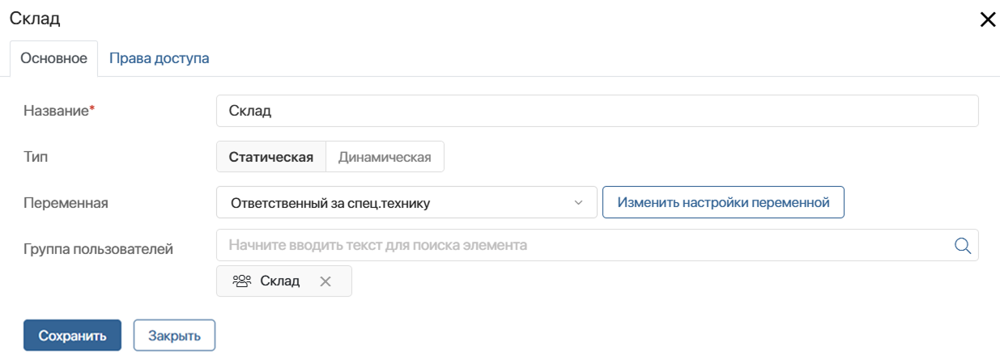
Ответственный за выдачу техники определяется в задаче Рассмотреть заявку, расположенной в бизнес‑процессе ранее зоны ответственности Склад. На форме задачи поле Ответственный за спец.технику появляется в зависимости от вида техника. Специальную технику выдаёт ответственный за неё, другое оборудование — любой сотрудник склада. Тогда:
- если поле Ответственный за спец.технику не заполнено в задаче Рассмотреть заявку, исполнителем в зоне ответственности будет группа Склад;
- если поле Ответственный за спец.технику заполнено, указанное в нём значение определит исполнителя в зоне ответственности. Значение Склад, заданное в поле Группа пользователей, не применится.
Группа пользователей
По умолчанию, если вы указали в качестве исполнителей группу пользователей или отдел, для выполнения задач будет включена настройка Кто первый. Задача будет назначена всем сотрудникам, входящим в эту группу или отдел. Как только кто-то начнёт работу по задаче, она исчезнет из списка задач остальных сотрудников.
Если вы разместите несколько задач в зоне ответственности, каждая новая задача будет автоматически назначаться тому сотруднику, который выполнял работу по предыдущей задаче.
Дополнительно для каждой задачи вы можете выбрать одну из опций множественного исполнения: Кто первый, Параллельное, Последовательное. Подробнее об этом читайте в статье «Задача».
На схеме процесса зона ответственности, представляющая группу пользователей или отдел, обозначается значком 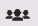.
Таким образом, после настройки зон ответственности процесс оформления заявки будет выглядеть так:
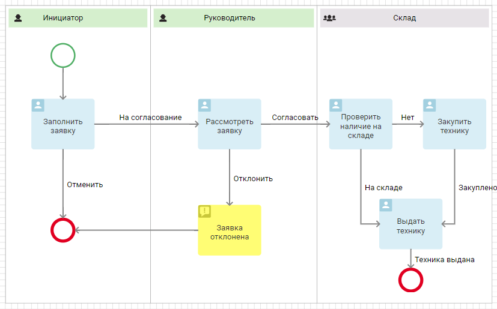
О настройке доступа к элементам приложений и файлам, используемым в задачах, которые размещены в определённой зоне ответственности, читайте в статье «Права доступа».